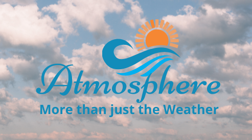

Site Name: Idaho Atomsphere
Site Purpose:
The purpose of this site is two fold:
- Provide a weather forecast for the next five days for several South Eastern Idaho cities. The forecast is provided by [National Weather Service, Open Weather Map, or other website] and is updated every hour.
- Provide a site that includes the idea of event promotion, relevant news, and other creative content that is relevant, and that people will want to visit often.
Site URL (Domain Name):
http://www.IdahoAtmosphere.com
Site Logo:
Site Motto:
Atomsphere: More than just the Weather